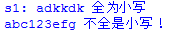
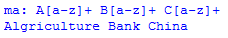
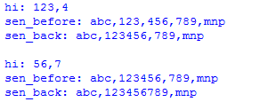
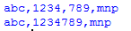
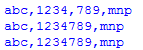
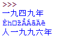
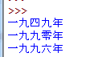

python正则表达式 小例几则
例子
一. 判断字串是否全部为小写字母
二. 找出句子中缩写词的全拼
三. 把数字中的逗号(例如123,345,000)去掉
四. 中文处理之年份转换（例如：一九四九年--->1949年）
会用到的语法
正则字符 | 释义 | 举例 |
+ | 前面元素至少出现一次 | ab+：ab、abbbb 等 |
* | 前面元素出现0次或多次 | ab*：a、ab、abb 等 |
? | 匹配前面的一次或0次 | Ab?： A、Ab 等 |
^ | 作为开始标记 | ^a：abc、aaaaaa等 |
$ | 作为结束标记 | c$：abc、cccc 等 |
\d | 数字 | 3、4、9 等 |
\D | 非数字 | A、a、- 等 |
[a-z] | A到z之间的任意字母 | a、p、m 等 |
[0-9] | 0到9之间的任意数字 | 0、2、9 等 |
注意：
1. 转义字符

>>> s'(abc)def' >>> m = re.search("(\(.*\)).*", s)>>> print m.group(1)
(abc)
group()用法参考
2. 重复前边的字串多次
1 2 3 4 5 6 7 8 9 10 | >>> a = "kdlal123dk345">>> b = "kdlal123345">>> m = re.search("([0-9]+(dk){0,1})[0-9]+", a)>>> m.group(1), m.group(2)('123dk', 'dk')>>> m = re.search("([0-9]+(dk){0,1})[0-9]+", b)>>> m.group(1)'12334'>>> m.group(2)>>> |
示例
一. 判断字符串是否是全部小写
代码
# -*- coding: cp936 -*- import re
s1 = 'adkkdk' s2 = 'abc123efg' an = re.search('^[a-z]+$', s1)if an:
print 's1:', an.group(), '全为小写' else:
print s1, "不全是小写！" an = re.match('[a-z]+$', s2)if an:
print 's2:', an.group(), '全为小写' else:
print s2, "不全是小写！"
结果

究其因
1. 正则表达式不是python的一部分，利用时需要引用re模块
2. 匹配的形式为： re.search(正则表达式， 带匹配字串)或re.match(正则表达式， 带匹配字串)。两者区别在于后者默认以开始符（^）开始。因此，
re.search('^[a-z]+$', s1) 等价于 re.match('[a-z]+$', s2)3. 如果匹配失败，则an = re.search('^[a-z]+$', s1)返回None
group用于把匹配结果分组
例如
import re
a = "123abc456" print re.search("([0-9]*)([a-z]*)([0-9]*)",a).group(0) #123abc456,返回整体 print re.search("([0-9]*)([a-z]*)([0-9]*)",a).group(1) #123 print re.search("([0-9]*)([a-z]*)([0-9]*)",a).group(2) #abc print re.search("([0-9]*)([a-z]*)([0-9]*)",a).group(3) #456
1）正则表达式中的三组括号把匹配结果分成三组
group() 同group（0）就是匹配正则表达式整体结果
group(1) 列出第一个括号匹配部分，group(2) 列出第二个括号匹配部分，group(3) 列出第三个括号匹配部分。
2）没有匹配成功的，re.search（）返回None
3）当然郑则表达式中没有括号，group(1)肯定不对了。
二. 首字母缩写词扩充
具体示例
FEMA Federal Emergency Management Agency
IRA Irish Republican Army
DUP Democratic Unionist Party
FDA Food and Drug AdministrationOLC Office of Legal Counsel
分析
缩写词 FEMA
分解为 F*** E*** M*** A***
规律 大写字母 + 小写（大于等于1个）+ 空格
参考代码
import redef expand_abbr(sen, abbr):
lenabbr = len(abbr)
ma = ''
for i in range(0, lenabbr):
ma += abbr[i] + "[a-z]+" + ' ' print 'ma:', ma
ma = ma.strip(' ')
p = re.search(ma, sen)
if p:
return p.group()
else:
return '' print expand_abbr("Welcome to Algriculture Bank China", 'ABC')
结果

问题
上面代码对于例子中的前3个是正确的，但是后面的两个就错了，因为大写字母开头的词语之间还夹杂着小写字母词
规律
大写字母 + 小写（大于等于1个）+ 空格 + [小写+空格](0次或1次)
参考代码
import redef expand_abbr(sen, abbr):
lenabbr = len(abbr)
ma = ''
for i in range(0, lenabbr-1):
ma += abbr[i] + "[a-z]+" + ' ' + '([a-z]+ )?' ma += abbr[lenabbr-1] + "[a-z]+" print 'ma:', ma
ma = ma.strip(' ')
p = re.search(ma, sen)
if p:
return p.group()
else:
return '' print expand_abbr("Welcome to Algriculture Bank of China", 'ABC')
技巧
中间的 小写字母集合+一个空格，看成一个整体，就加个括号。要么同时有，要么同时没有，这样需要用到？，匹配前方的整体。
三. 去掉数字中的逗号
具体示例
在处理自然语言时123,000,000如果以标点符号分割，就会出现问题，好好的一个数字就被逗号肢解了，因此可以先下手把数字处理干净（逗号去掉）。
分析
数字中经常是3个数字一组，之后跟一个逗号，因此规律为：***，***，***
正则式
[a-z]+,[a-z]?
参考代码3-1
import re
sen = "abc,123,456,789,mnp" p = re.compile("\d+,\d+?")for com in p.finditer(sen):
mm = com.group()
print "hi:", mm
print "sen_before:", sen
sen = sen.replace(mm, mm.replace(",", ""))
print "sen_back:", sen, '\n'
结果

技巧
使用函数finditer(string[, pos[, endpos]]) | re.finditer(pattern, string[, flags]):
搜索string，返回一个顺序访问每一个匹配结果（Match对象）的迭代器。
参考代码3-2
sen = "abc,123,456,789,mnp" while 1:
mm = re.search("\d,\d", sen)
if mm:
mm = mm.group()
sen = sen.replace(mm, mm.replace(",", ""))
print sen
else:
break
结果

延伸
这样的程序针对具体问题，即数字3位一组，如果数字混杂与字母间，干掉数字间的逗号，即把“abc,123,4,789,mnp”转化为“abc,1234789,mnp”
思路
更具体的是找正则式“数字，数字”找到后用去掉逗号的替换
参考代码3-3
sen = "abc,123,4,789,mnp" while 1:
mm = re.search("\d,\d", sen)
if mm:
mm = mm.group()
sen = sen.replace(mm, mm.replace(",", ""))
print sen
else:
break print sen
结果

四. 中文处理之年份转换（例如：一九四九年--->1949年）
中文处理涉及到编码问题。例如下边的程序识别年份（****年）时
# -*- coding: cp936 -*- import re
m0 = "在一九四九年新中国成立" m1 = "比一九九零年低百分之五点二" m2 = '人一九九六年击败俄军,取得实质独立' def fuc(m):
a = re.findall("[零|一|二|三|四|五|六|七|八|九]+年", m)
if a:
for key in a:
print key
else:
print "NULL" fuc(m0) fuc(m1) fuc(m2)
运行结果

可以看出第二个、第三个都出现了错误。
改进——准化成unicode识别
# -*- coding: cp936 -*- import re
m0 = "在一九四九年新中国成立" m1 = "比一九九零年低百分之五点二" m2 = '人一九九六年击败俄军,取得实质独立' def fuc(m):
m = m.decode('cp936')
a = re.findall(u"[\u96f6|\u4e00|\u4e8c|\u4e09|\u56db|\u4e94|\u516d|\u4e03|\u516b|\u4e5d]+\u5e74", m)
if a:
for key in a:
print key
else:
print "NULL" fuc(m0) fuc(m1) fuc(m2)
结果

识别出来可以通过替换方式，把汉字替换成数字。
参考
四. 推荐
Python正则表达式指南